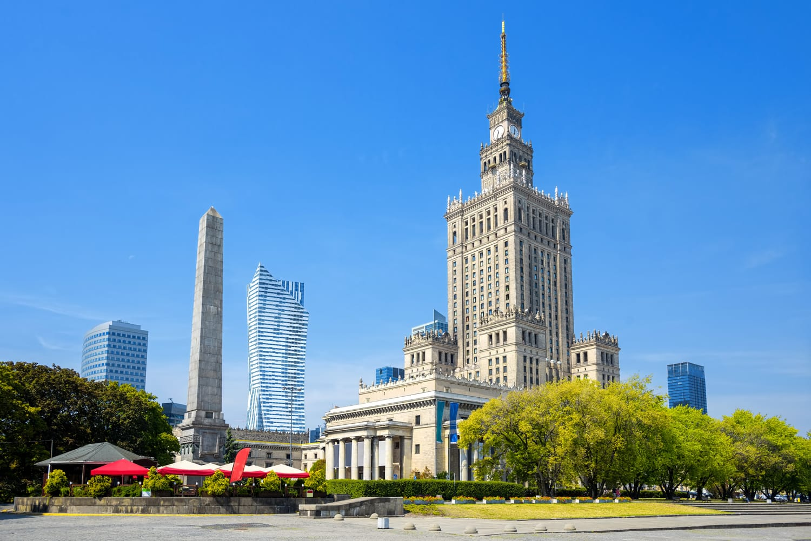
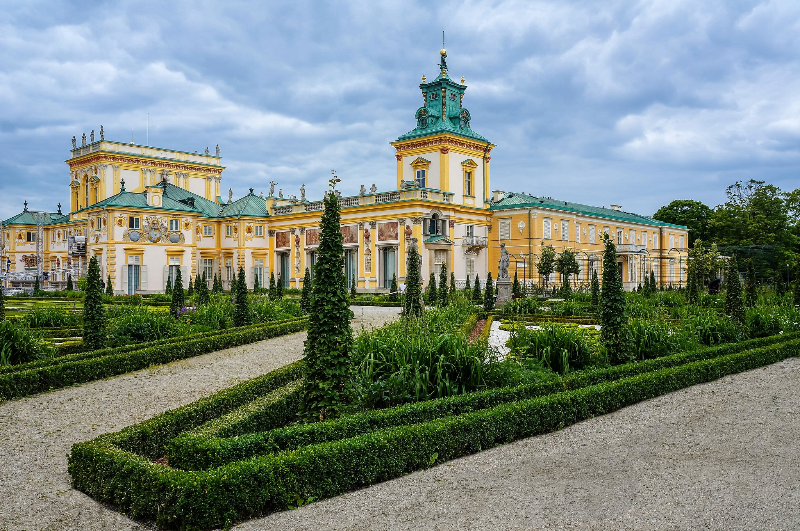
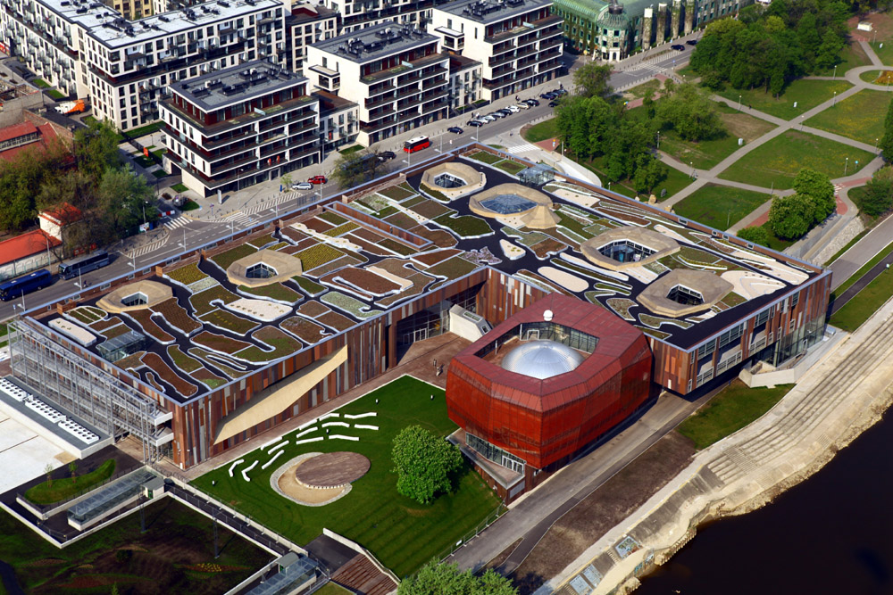

Fig. 1 - Palace of Culture and Science

Fig. 2 - Museum of King Jan III's Palace at Wilanów

Fig. 3 - Copernicus Science Centre s
One of the highest and most recognisable building in Warsaw can be seen from almost every part of the
capital. Where did it come from? It was opened in 1955 on the initiative of Joseph Stalin as a “gift of the
Soviet people for the Poles”.
Built by Russian workers, for a long time, it was considered to be a symbol of socialist power and the pride
of People’s Poland – it was where conventions of the Polish United Workers’ Party took place.
Since its very beginning, its monumental interiors have hosted numerous concerts, exhibitions, fairs and
shows.
Currently, the palace is home to theatres, a cinema, museums, trendy pubs and the main Warsaw Tourist
Information office.
Go up to the observation deck on the 30th floor of the building and see the beautiful panorama of the city
from a height of 114 metres.
Take a look at the socialist realist sculptures placed in the niches of the palace’s facade. Each symbolises
a different field of science, art, technology or culture, for example a young man with a book of classical
literature,
a member of komsomol, an archer and a woman from Central Asia. In a direct line from the main entrance, you
will find a stone honour tribune, from which the first secretaries of the Central Committee of the Polish
communist party greeted those marching on the May Day parade.
In summer, the area around the palace becomes the arena for numerous concerts, theatre performances and film
shows. In winter, it is a great place for skating enthusiasts thanks to the free ice skating rink. At night,
the building is beautifully lit, and additional decorations illuminate special occasions.